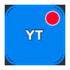
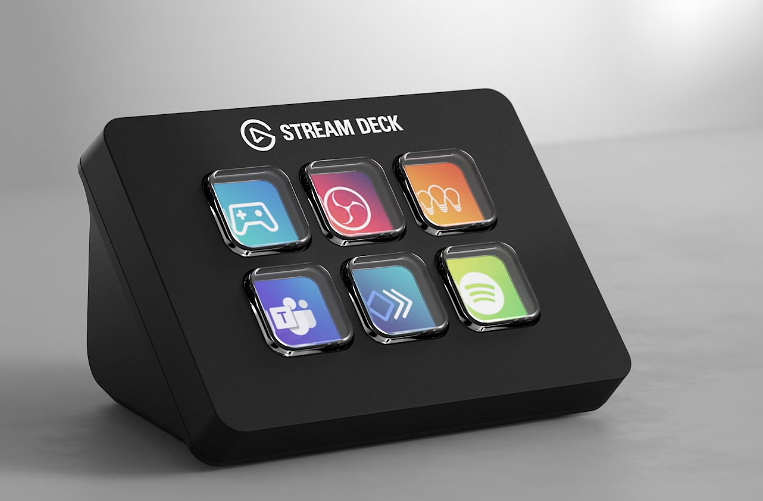
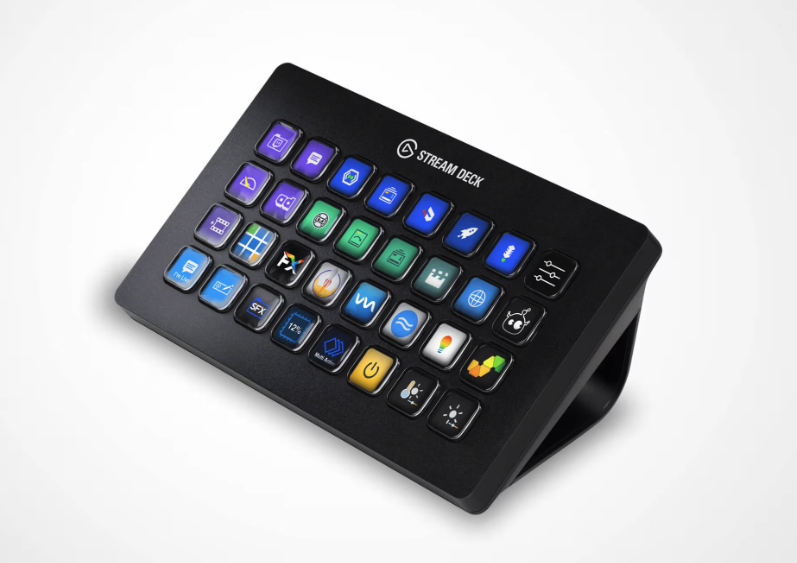
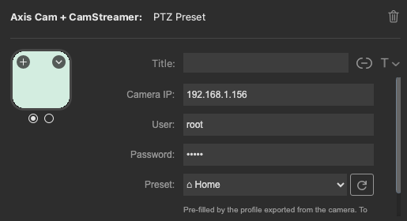

Full control from your deck
Each action talks directly to the camera over digest-authenticated VAPIX and product CGIs. No cloud, no middleman.
PTZ Preset
Jump to any server preset position (or Home) on a click. Presets are read live from the camera.
CamStreamer Stream
Start / stop a stream to YouTube, Facebook or any target. The key shows “Starting…” while connecting, then a solid red tally dot once live.
CamOverlay Widget
Show or hide a CamOverlay custom-graphics service instantly. The key reflects its current state.
CamSwitcher Source
Switch the live view between sources. The active view carries the red tally dot; the rest stay idle.

Live key state, the broadcast way
Stream and switcher keys mirror the camera in real time. When a stream is live or a view is on air, the key lights up with a steady red tally dot — the same signal every production crew already understands.


Fits every Stream Deck
From the 6-key Mini to the 32-key XL — lay out as many camera, stream and switcher keys as your show needs.


Install
Works with the Elgato Stream Deck app 6.5+ on macOS and Windows.
- Download the pluginGrab
com.4xsdev.axis-gateway.streamDeckPluginfrom the v1.0.0.1 release. - Double-click to installThe Stream Deck app opens and asks to confirm — click Install.
- Add a keyFind Axis Cam + CamStreamer in the action list and drag a key onto your deck.
- Enter camera detailsSet the camera
IP,userandpasswordonce — they're shared across keys.

Prefer zero setup? The camera can export a ready-made .streamDeckProfile with all your presets and streams pre-filled — just open it from the shared folder.

Setup examples
Pick the action on the key, fill in the camera, then choose from the live dropdown — values are read straight from your camera.


Under the hood: direct camera control
The plugin runs inside the Stream Deck app and talks straight to the camera's own HTTP APIs over digest authentication.
Stream Deck key ──▶ plugin (Node) ──HTTP digest──▶ Axis camera
├─ VAPIX PTZ /axis-cgi/com/ptz.cgi
├─ CamStreamer /local/camstreamer/…
├─ CamOverlay /local/camoverlay/api/…
└─ CamSwitcher /local/camswitcher/…When each call happens
| When | Purpose |
|---|---|
| Property Inspector opens | Read the live catalog — presets, streams, widgets, views — to fill the dropdown |
| Every 3 s while a key is visible | Cheap state read — stream live / widget visible / active view — to repaint the key |
| Key press | Call the matching native CGI on the camera |
You enter the camera IP, user and password once (stored in Stream Deck's local global settings). Digest auth is handled by the plugin, and the credentials are sent only to your camera.